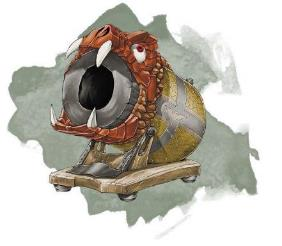
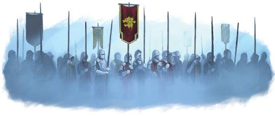

终末战争早就了现代的格局。《艾伯伦：在终末战争中崛起》中提及了不少在结束了持续近一个世纪的纷争之后这世上仍然存在的痛苦与怨恨，并讨论了把战役故事的时间线设定在战乱时代的选择。在D&D第三版的《战争熔炉》拓展里，有关于这场战争更详细的时间线。本节内容仅对现代的战争机器进行讲解以及为打算通过这场战争为背景塑造人物提供参考。
科瓦雷给人的第一印象是中世纪的风格。士兵们用长矛和利剑战斗、瑟雷恩弓箭手名声在外。但，魔法才是五国生活的核心，在五国魔法广泛地被用于通信、运输、娱乐以及……战争。在终末战争的战场上，哪些武器被投入了使用？哪些部队会在国境线上巡逻？终末战争期间中又出现了哪些重大创新？
本章节并没有提出一个模拟大兵团战斗的游戏规则。而是为了让读者了解上面所举例的各种问题，将探讨一番在终末战争中被使用到的各种工具和战术，以便冒险者们可以将这些元素融入到故事中。当故事中的英雄遇到必须穿过一片爆炸圆盘又或者必须夺下攻城法杖来阻止一场轰炸的剧情时，这里提到的内容会让玩家们有所参考。不过这一节中并不包含更详细的战术介绍。我们在这节之所以会讨论终末战争期间用到的各种军备，目的是为了让它们能够在王道冒险中登场。
魔杖、法杖和权杖是艾伯伦世界中广人熟知的魔法兵器。类似的，奥术炮塔也是一种不需要消耗物质弹药，完全依靠魔法能量工作的武器――不过奥术炮塔不是一个人可以轻易携带的小武器，它是大型的奥术工事，能够造成比常规法术造成更大范围和更广的作用面积。同样，在战争中如爆炸圆盘之类的魔法爆炸物也有投入使用，它可以通过事先前储存法术然后触发的方式来造成毁伤。
一般来说，在五国里的常见魔法大多数是3环以下；虽然4环和5环的效果也有，但它们都是少有的。这意味着像力墙术这样的法术只会偶尔在战场上看到，而火球术或者闪电束会是战场上的家常便饭。
奥术炮塔必须由一个接受过特殊训练的施法者来操作，其他人在一旁协助。一个熟练的小队能够在一轮内完成激活、瞄准和发射。
决定奥术炮塔的法术攻击加值和法术豁免DC时使用炮台操作者的对应调整。当奥术炮塔攻击标准射程外的目标时，攻击骰有劣势，受攻击的目标对炮塔的法术豁免有优势。
奥术炮塔需要奇械师或者魔匠师这种经过训练的专业人士才能驾驭；他们通常被称为魔炮手。魔炮手可以采用魔匠师的游戏数据，不过他们比魔匠师要掌握多一些法术，他们施放这些法术通常会需要一个特殊的法器，像是攻城法杖或增远权杖。所以安黛尔的魔炮手专家或许可以通过某个特殊法器来施放死云术，但他不能直接施放法术。魔炮手在施放这些法术时不需要消耗法术位，而是消耗一种名为西伯瑞斯之息的龙晶制品来为炮塔供能。
当然，PC应该比魔匠师或魔炮手更多才多艺。如果剧情需要DM可以让PC施法者在不受惩罚的情况下使用魔法炮塔，又或者在有足够的背景的支撑下，举个例子：如果PC是一个有士兵背景的法师。否则，DM可能会认为PC可以在接受某种惩罚的状态下操作它，例如：操纵者无法施法或者进行远程攻击；操作者进行的攻击有劣势；敌人对炮塔的法术豁免时有优势。作为PC，你可以选择使用西伯瑞斯之息来启动炮塔，又或者消耗你的法术位来启动炮塔。
|
西伯瑞斯之息Breath of Siberys 奇物 普通 奥术炮塔需要庞大魔法能源来为其充能。施法者可以通过消耗自己的法术位来启动奥术炮塔，但是魔炮手没有法术位。魔炮手会用西伯瑞斯之息来给炮塔充能――西伯瑞斯之息是一个小球体，里面含有经过高度精炼后的龙晶悬浮液。在启动奥术炮塔时，操纵者需要将西伯瑞斯之息与一块雕刻过黄铜板接触，随后球体消融，炮塔完成充能。 卡尼斯家族一直以来致力于在研发生产可以使用西伯瑞斯之息充能的法杖。使用一个动作来溶解充能板上的西伯瑞斯之息，能够为法杖恢复1d4点充能。卡尼斯的奇械师们正在努力开发更多可以搭配西伯瑞斯之息来充能的魔法道具。 |
攻城法杖Siege Staff
巨型奥术炮塔（法杖） 需施法者同调
AC：15
HP：120
伤害免疫：毒素、心灵
攻城法杖是最常见的奥术炮塔，它由木头制成，通常长约15尺，上面镶嵌着龙晶且刻满了刻有奥术符文。
激活攻城法杖需要三个动作：1个动作启动炮塔；1个动作瞄准；1个动作发射。
下列有几个基本的型号，每个型号都有不同的功效。启动时产生以下效果之一，由其型号决定。
爆破杖Blast Staf。这种型号的炮塔能够释放出广域的能量爆发，通常用于轰杀集结中的部队或村庄。它的射程为300/1200尺，杀伤目标为命中点60尺半径范围内的所有生物。造成9（2d8）力场的伤害，生物可以通过一次成功的敏捷豁免让所受伤害减半。
力能杖Force
Staff。这种型号的炮塔能释放出纯粹的能量用于定点爆破。这种型号主要是在战争后期才发展起来的，主要用于摧毁防御工事、泰坦战俑或飞艇。它的射程为600/2400尺，命中时造成44（8d10）的力场伤害。
法器杖Focus Staff。这个型号的炮塔可以放大同调它的施法者所施展的法术。任何需要攻击检定或豁免检定的法术都可以通过这个型号的攻城法杖施放。法术的基础射程将会放大5倍，最大射程可达该法术基础射程的10倍――因此，通过该型号的攻城法杖施放的火焰箭Fire Bolt射程为600尺，最大射程为1200尺。同时法术的作用范围还会增加1倍。如果该法术通常影响一个目标，那么它将改为影响一个半径为20尺的球形区域；如果该法术通常需要进行攻击检定，那么受影响的所有目标必须做进行一次敏捷豁免，豁免成功则伤害减半且不会受到其他效果。
增远权杖Long Rod
大型奥术炮塔（权杖） 需施法者同调
AC：15
HP：40
伤害免疫：毒素、心灵
增远权杖是便携版的攻城法杖，它长约8尺。带支架重约350磅。
架设增远权杖需要5个动作，拆开运输也需要同样数量的动作。架设完毕后，需要1个动作来启动增远权杖，1个动作来瞄准，1个动作发射。
任何需要攻击检定或豁免检定的法术都可以通过增远权杖施放。法术的射程将被放大为标准的3倍，最大射程可达该法术标准射程的6倍。该法术的作用范围增加到原本的150%。如果该法术通常影响一个目标，那么它将改为影响一个半径为10尺的球形区域；如果该法术通常需要进行攻击检定，那么受影响的所有目标必须做进行一次敏捷豁免，豁免成功则伤害减半且不会受到其他效果。

附魔炮塔Enhanced Artillery
虽然奥术炮塔威力强大，但使用物理弹药的常规攻城武器仍有用武之地，这在《城主指南》第8章有描述。弩炮、弹射抛石机和配重投石机都是常见的炮塔形式，在战场和战舰上都能看到它们的身影。就像瑟雷恩的弓箭手往往会使用魔法弓一样，终末战争中用到的攻城器械也是被魔法加强过的。
自装填Animated
Engines。活化攻城器械的装填机关，以加大其投射效率。一般来说，自装填化的攻城器在工作人员进行瞄准的时候会自动装填弹药。因此，自装填化的弩炮Ballista只需要2个动作便可完成发射，自装填化的弹射投石机Mangonel则只需3个动作。卡尼斯家族还发明了能够自动发射的攻城器――在自装填的基础上还能够自动瞄准。这种类型的攻城器进行瞄准和发射时所需的动作数量与有人版本完全相同，区别在于它不需要操纵者。但是，这类攻城器只能执行简单的指令，它们不会自我思考，需要有明确且绝对的命令才能让其运作，例如：“继续攻击北塔，直到它被摧毁。”
加农炮Cannons。加农炮可以对超远距的目标造成巨额的钝击伤害。正如《城主指南》中所述，加农炮不一定需要使用火药作为动力，终末战争中使用的加农炮确实不需要。最常见的加农炮是由吉拉哥的侏儒制作的元素加农炮Elemental Cannon，它通过束缚在其中土元素为动力投射出巨大的石制炮弹。吉拉哥在终末战争后期开始向布鲁兰提供这些武器。当卡尼斯家族和五国开始研发其他种类的加农炮后，攻城法杖Siege Staff的出现顶替了加农炮们在战场上的席位。
附魔弹药Enchanted Ammunition。弩炮和投石机的弹药一般都会附上一些命中后便会触发的魔法。使用附魔弹药的攻城器械能够造成的普通伤害以外的效果。
• 爆炸弹Explosive ammunition能对弹药落点周围半径30尺进行杀伤。任何区域内的生物进行一次DC15敏捷豁免，豁免失败会受到10（3d6）伤害，成功伤害减半。通常情况下，爆炸弹会造成火焰伤害，范围内任何未穿戴或携带的易燃物品都会被点燃。坎纳斯的死亡箭能够造成只对活物有效的黯蚀伤害，而瑟雷恩的提��之泪则可以造成光耀伤害。
• 召唤弹Summoning ammunition能在弹药落点周围召唤造物。安黛尔的火焰石能够产生一个临时的炽焰法球Flaming Sphere，在落点区域周围随机滚动。吉拉哥开发出这类弹药的超级版本，这种弹药能在落点上施法召唤元素，但是它的造价高昂且数量稀少。
• 恐慌石Panic stones能迫使以该石头为中心90尺半径范围内的所有生物进行一次DC 12的感知豁免。任何未通过豁免的生物将扔掉它所持有的任何物品，并恐慌1分钟。恐慌状态下的生物必须使用疾走动作远离恐慌石。如果受影响的生物回合结束时距离恐慌石超过90尺，则它可以进行一次相同的感知豁免。豁免成功后，该生物的恐慌状态终止。
奥术炸弹Arcane Explosives
爆炸圆盘Blast
Disk是五国中最常见的魔法爆炸物。虽然爆炸圆盘的作用类似于炸弹或地雷，但它们可以产生各种各样的魔法效果：一个爆炸可能会触发一次困惑术Confusion进而引发骚乱，或者召唤一个狂暴的元素进入人群拥挤的城镇广场。
在终末战争期间，所有参战国都使用过爆炸圆盘。在打扫战场时，那些还没被触发的爆炸圆盘是个长久的威胁。虽然所有国家都会使用单纯的力场或火焰爆炸圆盘，但有些国家会有自己的特殊变种：
• 安黛尔广泛使用了高杀伤性爆炸圆盘，他们龙鹰连队因装备的死云术Cloudkill爆炸圆盘而臭名远扬。
• 布鲁兰使用的爆炸圆盘是最基础的版本。
• 塞尔的版本基本上都是对心灵生效的――困惑术Confusion、恐惧术Fear和造成心灵伤害的爆炸。
• 在沃尔之血主导的时期，坎纳斯制作的爆炸圆盘，会先造成黯蚀伤害，然后再造成其他效果，如骷髅之舞Danse Macabre法术，通过最初的爆炸杀死受害者，然后拉起他们尸体猎杀幸存者。
• 瑟雷恩研发出了能造成光耀伤害的爆炸圆盘――对坎纳斯的不死军团特攻的杀器。战争末期，瑟雷恩还试图研发拂晓Dawn爆炸圆盘。
虽然基础爆炸圆盘是一种普通稀有度的魔法物品，但根据伽利法法典，平民无论拥有或是携带都是非法的。卡尼斯家族有生产爆炸圆盘，但他们不会将其出售给平民（至少不公开出售）。所以如果你想要搞到爆炸圆盘，你得有黑道关系或者自己动手制作。
下文给出了爆炸圆盘的具体规格，不过DM可以创建更强悍的版本来满足特定故事的需要：某个超级爆炸圆盘的杀伤半径可以达到数百尺而非20尺，超级死云术爆炸圆盘可以释放出强大的魔法效果它会在移动过程中会不断扩大，并持续数小时或数天。
战争期间开发了许多不同形式的炮塔和爆炸物，一旦证明过于昂贵或难以生产，这些炮塔和爆炸物往往会被放弃。以上只是战争期间使用的魔法工具的几个例子，一如既往，如果它们能增进你的故事，你也可以引入其他工具。
|
边栏：伤害规模 这节描述的大多数武器的伤害能力乍一看上去可能会显得很低。一架体积庞大的攻城法杖造成的伤害怎么比火焰法杖还低？但在设计战争器械时，要先考虑这些武器要用在谁身上。五国军队中的标准士兵套用的是卫兵或强盗的数据，它们只有11HP。当需要大量兵力时，国家会召集民兵，他们中的大多数人套用的是只有4HP的平民数据。 HP是一个抽象的概念，它是 "身体和精神持久性、生存意志和运气的结合"。普通人的HP在4-11点的区间是比较正常的，普通人在街上被一台架设好的弩炮打中将会受致命伤。特殊个体的高HP――比如玩家角色――反映了他们作为英雄，能够以某种方式避开了致命一击，或者能够强忍住疼痛在受到常人会昏迷的伤害时能够坚持战斗。在开发武器和战斗魔法时，阿卡尼克斯的巫师和十二学会的奇械师是以典型的士兵为假想敌，而不是用玩家的英雄角色作为标准。 所以以火球术为例：它的射程是150尺，影响半径20尺的范围，造成8d6的火焰伤害。这是给精英小队对抗特殊敌人而设计的：能它造成高额伤害，并且拥有比较大的影响范围。但想象一下，你正在与120名手持长弓的士兵作战，一旦你进入他们600尺的射程范围后，他们就开始向你射击。你可能永远无法接近到能够施放火球的程度。即使你做到了，伤害量也远远大于你的需要（期望28伤害的法术打到11HP敌人身上）。火球术是一个小队对付强大敌人的绝佳手段，这是典型的冒险者队伍配置。但在遍布普通士兵的战场上，它是非常低效的，因为射程和杀伤范围比高伤害更重要。攻城法杖造成的伤害可能没有火焰法杖强，但它能同时击中更多的敌人且射程更远。 这会影响到有玩家角色参与的战场的场景将如何展开。为了故事能继续下去，DM不会希望玩家的队伍被攻城法杖的首轮轰炸所消灭，毕竟这样的话这故事还怎么讲下去？相反，那次轰炸可能只造成12点火焰伤害。轰炸使得与小队同行的士兵中的一半人死亡（豁免失败），但小队成员避开了最猛烈的爆炸继续推进。3d6的伤害可能感觉很低，毕竟杀不死一个玩家角色。但它足以杀死平民和普通士兵，这也体现了顶着炮火继续前进的英雄冒险者们是多么地了不起。 |
爆炸圆盘Blast Disk
奇物 多种稀有度（普通，非普通，珍稀）
爆炸圆盘储存有破坏性的奥术能量。一个标准的爆炸圆盘直径约为9寸，厚1寸，由许多层不同的金属制成，圆盘的表面镶嵌有龙晶，同时刻着奥术符文。任何仔细研究圆盘表面的人都可以对其进行一次与圆盘的豁免DC相对应的智力（奥秘）检定。成功的话，他们就能识别出圆盘的法术效果。
爆炸圆盘有三个技术参数：触发方式、装药类型和充能形式。这些参数在制作圆盘的时候就要进行设置。
触发方式Trigger。接触到爆炸圆盘的施法者可以用一个动作来激活它。然而，大多数情况下当它爆炸的时候，你肯定不会希望自己正拿着它。制作爆炸圆盘时可以考虑设定以下触发方式，或者由创建者选择更复杂的触发方式（例如，当某个词被说出时，当某个特定物体进入范围内时，就会爆炸，等等）。
• 定时型Time。激活时，使用者可以为其设置最长10分钟的定时起爆。
• 接近型Proximity。激活30秒后，当有人进入磁盘的一定距离内，或有人接触到圆盘再松开时就触发。
• 冲击型Impact。激活状态下的圆盘在受到撞击会引爆，用起来类似于手雷。
装药类型Payload。当爆炸圆盘被触发时，它会产生以下魔法效果之一，这必须在制造的时候设定好：
• 爆炸型Explosive。这将在以爆炸圆盘为中心的20尺半径范围内产生一次爆炸。该区域内的每个生物都必须进行一次DC13的敏捷豁免，豁免失败会受到11（2d10）的伤害，成功受到的伤害减半。爆炸圆盘对物体或建筑造成3倍伤害。伤害的类型要在制作的时候设定好。
• 法术型Sepll Effect。圆盘在触发时会产生一个法术效果。该效果必须以触发的单体生物为目标或者以圆盘为中心的区域为目标。圆盘中储存的法术的等级决定了它的豁免DC和攻击加值，以及其稀有度，威力如下表所示。
|
法术等级 |
稀有度 |
豁免DC |
攻击加值 |
|
爆炸型 |
普通 |
13 |
― |
|
1-3环 |
非普通 |
14 |
+6 |
|
4-5环 |
珍稀 |
16 |
+8 |
充能Charge。标准型的爆炸圆盘只会有一次充能，当效果被触发时，龙晶就会破碎。然而，有些高级的爆炸圆盘会在每天的黎明会再充能，这种爆炸的稀有度会提升一级。
拆除爆炸圆盘Disarming a Disk。在战场上使用时，爆炸圆盘通常被埋在地下或隐藏起来。想要找到爆炸圆盘需要进行一次成功的智力（调查）检定，其DC等于使用者隐藏其时进行的能力检定，如智力（自然）或敏捷（巧手）。想要拆除爆炸圆盘，角色必须拥有奥秘技能熟练，并使用盗贼工具进行一个DC等于爆炸圆盘的豁免DC的敏捷检定。检定结果低于DC值5点以上，则爆炸圆盘就会像被触发了一般引爆。被成功解除的爆炸圆盘也会消耗一次充能，这意味着大多数爆炸圆盘在被解除后都失效了。
虽然元素飞艇是近期才有的发明，但空战长期以来都是不曾缺席。空中斥候是侦察体系的基本组成部分，空中突击队可以绕开防御工事打击敌人的心脏，装备有远程武器或能够施法的空中骑兵能够对地面部队进行毁灭性的打击。
这些牲畜是最常见的空战坐骑。尽管有些国家有自己的独门秘技，但大多数坐骑是由瓦塔利斯家族饲养和训练的。
• 鹫马是最常见的瓦塔利斯飞行坐骑。所有国家都会某种程度上配备和使用这种坐骑。
• 狮鹫是瓦塔利斯的另一个主力军。狮鹫比鹫马更凶悍，经常可以跟骑手加入战场参与战斗。
• 飞马是很罕见且无法被奴役的特殊坐骑。萨恩的瓦塔利斯家族飞地是为数不多能训练它们的地方之一，同时布鲁兰有一支精锐的飞马骑兵队。
• 不少摩洛领的矮人氏族与蝎尾狮搭上了关系，昆达拉克家族以其蝎尾狮骑兵而闻名。
• 安黛尔的龙鹰名声远扬，龙鹰是一种类似于巨鹰的生物，很久以前安黛尔就将其作为其国家的象征。
• 前伽利法时代，瑟雷恩地区的贵族们就有着驯养一定数量的飞龙的习惯。
以上这些只是些特别典型的例子，除此之外还有许多其他牲畜――像是翼龙、巨猎鹰、巨鹰和巨猫头鹰――都有在终末战争期间被作为坐骑。你能能在萨恩城一年一度的 "八风锦标赛"中看到这些风格各异的飞行坐骑。
虽然一般坐骑只需要一个骑手便可以操控，但有些更大型的坐骑可以携带多个乘员。鹫马只能搭载一个弓箭手或舞杖者，而狮鹫和飞龙则可以同时搭载几个。瑟雷恩是第一个使用飞行坐骑携带装有满载爆炸物的次元袋的国家，它能让骑手同时携带大量爆炸圆盘，简单点讲就是能够携带大量重且大件的物体。
石像鬼是优秀的侦察兵和信使，鸟妖则能够对军队造成大量毁伤。萨拉释克家族在YK988开始出售这些生物的雇佣兵业务，所以它们的能力还没能在战争中得到充分发掘。然而一些国家仍在探索如何有效地利用这些生物的能力。
安黛尔除了他们最爱的龙鹰外还组建了配备飞行扫帚的精英部队。其他国家也试图在较小的范围内复制这些东西，用来做侦察员或者间谍，但安黛尔是唯一一个在战斗中使用魔法扫帚骑兵队的国家。
第一艘元素飞艇于YK990正式投入使用，也就是哀伤之日的四年以前。驾驶飞艇需要一个林兰德家族的飞行员，最初的时候林兰德家族并不愿意将他们的飞船用在纯军事服务上。直到YK994，他们开始生产一些“风暴舰stormships”。今天，林兰德家族可能正在与某一势力合作开发空中战舰，DM可以决定他们正在与哪个国家合作。
魔法技术在不断发展。当伽利法一世建立他的王国时，他手下的法师们没能掌握火焰箭或冰霜射线。魔法评议会研究艾伦尼的魔法和技术发明出戏法这种能够随便使用的简单法术使用数个世纪，帝国的士兵们在这之前主要依靠的是剑和弓。不过随着终末战争的到来，安黛尔对其拥有的资源进行了评估后。因为是魔法评议会的所在地，安黛尔在奥术魔法的教育方面领先于整个帝国。安黛尔组建了第一支奥法骑兵队，开发了战争法杖和战斗权杖。在终末战争期间，这些技术在五国和其他地区传播开来。如今，当你看到强壮的施法者或某个哨兵元帅剑杖双持，请不要觉得奇怪。但是人们不会把这些人称之为 "奥术骑士"，这些使用火焰箭或者圣火术战斗的人，会就被称为 "舞杖者"。
在最简单的层面上，舞杖者是任何能够施放伤害性戏法的人。除此之外，这还关系到你在这世界上的身份。如果你会用火焰箭戏法――无论是法师还是术士，又是你有魔法学徒专长――你是一个舞杖者。你有带着奥术法器吗？如果有，你会把它放在显眼的位置吗？你是否会自豪地拿着你的费尼亚余烬魔杖，表演一系列的火焰戏法？是的话，那你算是个舞杖者。相反，如果你是避战的学者型法师且很少会用奥术法器来施法的话，你就不算。尽管在魔法战斗方面两者能力没什么不同，时不时一个舞杖者更多地取决于你对魔法的态度。
标准的NPC舞杖者的游戏数据，可以使用任何NPC的基础数据作为基础，然后让他们学会两个以上的攻击型戏法即可。大多数的奥术骑士还可以施放至少1个一环的法术。如果剧情需要DM可以让他们学会更多的法术。在"战斗魔法：施法距离和作用范围"侧边栏中，介绍了两个新的舞杖者会用到的法术。
由于NPC的角色卡不必跟与PC的角色卡使用相同的规则，而且玩家角色是非常特殊的存在，所以DM可以决定让NPC舞杖者必须使用某个奥术法器才能施法，而PC是多面手；魔杖PC用起来是很方便，丢了魔杖的话PC可以用别的代替。通常奥术骑士会需要一根魔杖、权杖或法杖用来施展法术或咒语。下面将给出几种NPC舞杖者的范例：
• 安黛尔的奥术骑士Aundairian Dragoon。已知戏法：力能冲击Force Blast*，电爪Shocking Grasp。已知法术：震荡冲击Concussive
Burst *（1/天）。
• 布鲁兰的驱火使Brelish Firebrand。已知戏法：火焰箭Fire Bolt,，光亮术Light；已知法术：燃烧之手Burning Hands（1/天）。
• 塞尔的魅影Cyran Phantasm。已知戏法：力能冲击Force Blast*，次级幻影Minor Illusion；已知法术：护盾术Shield（1/天）。
• 坎纳斯的食尸鬼Karrnathi Ghoul。已知戏法：冻寒之触Chill Touch，毒气喷溅Poison Spray；已知法术：造成恐惧Cause
Fear（1/天）。
• 瑟雷恩的灯塔使Thrane Beacon。已知戏法：圣火术Sacred Flame，维生术Spare the Dying；已知法术：光导箭Guiding Bolt（1/天）
【注：带*的为本节边栏的新法术】
虽然舞杖者正变得越来越普遍，但目前这仍然是个精英领域。作为DM，你可以通过将舞杖者的能力添加到某个标准的NPC资料里，比如说NPC士兵，来表示他接受过精英的训练，就像是给PC的角色卡点个专长那样。如果你想给现代或过去的士兵添加更多的国籍特色，你可以使用不同的标准卡。瑟雷恩以其弓箭手而闻名，如果你放一个瑟雷恩精英弓箭手，你可以使用斥候的标准卡，再加上神射手专长。坎纳斯的重甲骑士举世闻名，你可以给他们套上重甲大师专长。
魔杖和法杖
舞杖者都需要接受使用奥术法器的训练，可魔力并不是储存在魔杖里，它只是一个引导法术的工具。但，自带魔力的魔杖、权杖和法杖又怎么说呢？根据艾伯伦的魔法普及度设定，普通和非普通级别的魔法物品都是科瓦雷魔法工业的一部分；珍稀级别的魔法物品多半是舶来品或者价格昂贵；至于极珍稀和传说级别的魔法物品，它们大部分都超出了卡尼斯家族和魔法评议会的能力范围。因此，战场上你可能会看到有火球魔杖Wand of Fireballs、闪电束魔杖Wand of Lightning Bolts
登场，尤其是跟安黛尔的部队扯上关系时，但它们很罕见，只会装备给精英部队或者在关键行动时启用。
然而，卡尼斯家族和安黛尔的魔法评议会一直在致力于生产更有效的武器，魔法飞弹魔杖Wand of Magic Missiles就是近代的发明之一。老版本的魔杖价格高昂，且要么需要施法者同调，要么无法自充能。魔法飞弹魔杖Wand of Magic Missiles打破了这一障碍：它是一种非普通级别的魔法物品，不需要同调，任何人都能用。有钱的舞杖者能够随身携带一堆这种魔杖，每回合都能做到火力全开。执法人员、皇家卫队或任何其他暴力机关的人员手中都可能配备魔法飞弹魔杖Wand of Magic Missiles，所以在五国的大部分地区也都可能找得到购买渠道。不过魔法评议会12年前才把这款魔杖完善，卡尼斯家族又还没能复制出他们的工艺。所以飞弹魔杖的入手方式基本上都跟安黛尔人有关；在萨恩城出售的飞弹魔杖很有可能是战争时期的安黛尔士兵回收的二手货。
等哪天卡尼斯家族能够复制出这玩意，你就能在任何卡尼斯家族飞地搞到它。但就目前而言，这些魔杖在安黛尔以外仍然很难买得到。
边栏：战斗魔法：施法距离和作用范围
随着安黛尔愈多地训练奥术骑士，他们发现亟需对付瑟雷恩的长距离弓箭手以及大量农奴军的法术。力场冲击是一个简单的法术，它杀伤力不如火焰箭，但是射程比长弓远，而且伤害的适应性很强。震荡冲击的伤害能力没有燃烧之手或雷鸣波那般强大，但它的作用范围比得上火球术，且对于一般的舞杖者来说并不难掌握。这些法术可能对PC们来说没有什么吸引力，但是对敌人来说可不一定如此。 力场冲击 Force Blast
塑能 戏法 施法时间：1个动作 施法距离：180尺 法术成分：V, S 持续时间：即时 法术列表：奇械师、术士、法师 你对施法距离内一个生物或物件射出一道魔法能量，对目标进行一次远程法术攻击。若命中，则目标受到1d8点力场伤害。 你到达5级时，该法术的伤害增加1d8（变为2d8）。11级时再加1d8（变为3d8），17级时再加1d8（变为4d8）。 震荡冲击 Concussive Burst
1环 塑能 施法时间：1个动作 施法距离：60尺 法术成分：V, S 持续时间：即时 法术列表：术士、法师 撕裂性能量造成的脉冲在空气中荡漾，能够在大范围内造成轻微的伤害。选择一个施法距离内的某一点。以该点为中心半径20英尺范围内的每个生物都必须进行一次体质豁免。如果豁免失败，将受到2d4的力场伤害，并耳聋，直到你的下一回合结束。豁免成功则伤害减半且不会耳聋。 升环施法效应：当使用2环或更高法术位施展该法术时，你使用的法术位每高一环，法术的伤害就增加1d4。 |
在终末战争期间，塞尔给卡尼斯家族支付了大量金钱，敦促他们开发更加致命的武器。YK959，卡尼斯家族向丹妮尔女王提交了第一批泰坦战俑。这再短时间内给塞尔带来了优势――但和往常一样，卡尼斯家族开始把这些发明也卖给其他国家，同时也把爆破圆盘和攻城法杖卖给那些需要跟泰坦战俑作战的客户。
在终末战争期间，泰坦战俑扮演了许多关键角色。一个威风凛凛的泰坦战俑的现身能为步兵提供一个防御的堡垒，因为对手的步兵很难在没有攻城器或魔法的支援的情况下与泰坦交战。泰坦战俑不知疲倦，还意外地灵活，几乎能穿越任何地形。他们还有攻城怪物这项能力，使得他们在摧毁防御工事和攻城器时也非常有效。
就像《艾伯伦：在终末战争中崛起》中所描述的那样，标准的泰坦战俑的平台特性可以让它变得多功能。泰坦的底盘有两个平台，每个平台都可以容纳一个中等或更小的生物。通常情况下，这些平台可以容纳弓箭手，为战俑提供一些远程火力支持，以协助他们发挥其强大的近战攻击能力。不仅如此，精英乘员还能显著提高泰坦战俑的战斗力：塑能法师可以以提供强大的远程攻击，而防护法师可以随时反制或驱散敌人的魔法，奇械师可以保持泰坦战俑的运作。如果你打算派你的泰坦战俑去对付坎纳斯的不死生物？驱魔师是对亡灵的特效药。又或者，泰坦战俑可以简单地充当攻城锤，携带两名间谍或敢死队，一旦泰坦突破防线，他们就能跳进敌方的阵地。
泰坦战俑的怪物卡代表的是它的标准版本，但在近40年的使用过程中，它们在设计也出现了许多变化。可以尝试增加以下选项让你的泰坦战俑更有特色。
可以将泰坦战俑的一个武器可以改为集束弩炮。这种武器能够自动装填和生成弹药。如果泰坦战俑装配了臂弩，用以下攻击选项替换手斧或拳锤:
臂弩Armbow.远程武器攻击：+6命中，射程120/480尺，单一目标。伤害：16 (3d10)穿刺伤害。
在战争末期，卡尼斯家族开发一种单平台的泰坦，用一台增远权杖(如“奥术炮塔”一节中所述)来代替其他平台。
在特定区域服役的泰坦战俑通常会需要特殊防护以抵挡元素伤害。例如，来自爆炸圆盘或攻城杖的力场和火焰伤害是最常见的类型，所以卡尼斯家族经常给泰坦战俑s增加对这些伤害的抗性。
这种泰坦战俑的底盘有一个中空空间，能够允许最多携带6个中型生物或额外的货物。身体质量的缺失，带有运兵仓的泰坦战俑只有18AC和100HP，但它的速度增加到45尺。
泰坦战俑虽然也被称为“战俑”，但它与后来出现的活体构装截然不同。泰坦的感知能力有限。他们需要在只记认指挥官的识别印记，有时候也要给他们的盟友的制服上刻下同样的印记。他们能够服从命令和一般指令，如“保护盟友”或“与敌人交战”。但通常来说，泰坦战俑是不会情感冲动的，这反映在他们对魅惑或恐惧免疫这一事实上。如今，大多数幸存的泰坦战俑只是在仓库里待机，一动不动，直到再次服役的时候。
然而也有过一些发展出完全意识的泰坦战俑的传说。如果传说是真的，这可能是某些异端奇械师(可能是藏在卡尼斯家族中的旅者信徒)的手笔，也可能是随机进化的火花――这表明所有泰坦战俑都拥有提升感知能力的潜力。
有意识的泰坦战俑会失去对心灵伤害的免疫。它不再对恐惧或魅惑免疫，但它在对抗造成这些情况的影响的豁免上有优势。它的智力增加到10(或更高)，且拥有自我判断的能力。
科瓦雷经历了一个世纪的战火洗礼，两年前签署的《王座条约》结束了这场冲突。作为一个冒险者，你是一个具有非凡天赋和能力的人。你参加过战争吗？如果是的话，你为哪个国家而战，以什么身份而战？如果没有，为什么？是你对你的祖国不忠诚吗？你反战吗？还是你有更重要的事要做？
DND第三版的扩展书《战争熔炉》中详细描述战争期间的各大事件，而《艾伯伦：从终末战争中崛起》中探讨了把它们引入冒险的方式。本节将探讨终末战争是如何塑造了你的性格――在设定你的性格和想法时要考虑的事情，而这都能激励你继续前进。
如果你是个人类，你在战争岁月中长大。如果你是长命种族种族的一员，你可能会记得战争前的一段时光，但如果是这样的话，你可能经历了数十年的战争岁月。它对你有什么影响？这将如何反映在你的性格和背景，或者你的理想或缺点？
下表：终末战争背景，提供了一些塑造角色的灵感。战争对你的生活有什么影响？你不一定要选士兵背景才能参加终末战争；拥有化外之民背景的人可能是一名斥候，而智者或行会工匠可能会操纵奥术炮塔。且不论你是如何参与其中的，你来自哪个国家？你对你的国家忠诚吗，如果是，你鄙视你以前的敌人吗？还是说你支持和平，希望科瓦雷迎来团结的新时代？
|
D12 |
背景 |
|
1 |
侍僧。你是在后方的神殿里服务，还是在前线为信徒服务？战争和葬礼增强了你的信仰，还是说你的信仰动摇了？ |
|
2 |
骗子。你是用你的狡猾来躲避战争，保护自己，行骗为生吗？还是说你当兵期间，用你的智慧给你的小队搞到了他们需要的给养并通过谈话摆脱了麻烦？ |
|
3 |
罪犯/间谍。作为一个罪犯，你把自己利益置于爱国主义之上。战争对你有什么影响？你怎么看待你的国家？如果你是一个间谍，你就参与其中，你是为国家服务还是为阴影龙纹家族服务？你是为什么以及怎么从你的职责中退休的？又或者你还是现役？ |
|
4 |
艺人。你是一个追求自己的事业而不是参战的平民吗？或者你是一个军乐演奏者或者擅长鼓舞你国军队的爱国者？你会在你的表演中加入战争主题吗？你忠于某个国家，又或是一个世界公民？ |
|
5 |
平民英雄。你广受普通人的爱戴。是因为你在战争中所表现出来的英雄壮举，即便你的军衔不高也让你成为了传奇？还是为了保护平民当了逃兵？又或者说你是个义警，把精力放在人民的利益上而不是为远方的贵族打仗？ |
|
6 |
行会工匠。你是在五国的大城市工作，还是在前线服役的平民契约工？许多隶属龙纹家族里的工匠被安插到军队中，帮助维护设备或提供重要服务。你是忠于你的国家还是行会？ |
|
7 |
贵族。作为一个贵族，你曾带领你的人民奔赴前线吗？还是你利用你的职位来逃避责任？你是和平和谈判的支持者，又或是你认为你的国家能够而且应该赢得这场战争？ |
|
8 |
化外之民。你曾是五国军队中的一名斥候吗？你来自一个遥远的国度，于这场战争没有任何瓜葛――你知道原因吗？还是说你只是个农民或猎人对渴求权力的君主的贪婪和渴求毫无兴趣? |
|
9 |
智者。知识就是力量。当别人拼杀时，你在大学里学习吗？一个试图发掘历史真相的史学家？或者你曾作为研究员为其中某个国家服务，是研究常见的事物或者进行奥术实验？ |
|
10 |
水手。你在公海上为五国之一服务过吗？你是个走私者或海盗，在战乱中寻找机会？又或者你曾在商船上服役，在危险的时刻追求真切的利益？ |
|
11 |
军人。作为一名军人，你的有高军衔，这表明你光荣服役了。你为哪个国家而战？你著名的功勋是什么？你为什么离开军队？如果战争再次爆发，你会回来服役吗？ |
|
12 |
流浪儿。科瓦雷早在哀叹之日前就满地流民。你的家乡被毁了吗？如果是的话，你是在哪里长大的？你曾经有过家人吗，如果有，他们现在在哪里？或者你是一个孤儿――无论是在战场上捡食，还在大城市的街道上维持生计，又或是在孤儿院长大？ |

持续了一个世纪的战争给科瓦雷人民留下了深深的身心创伤。不管你是否参加过战争，它不可避免地会在某种程度上影响你的生活。参考下表的选项，看看这些灵感是否适用于你塑造你的角色。
战争结束了，但没有赢家。你会怎么看？作为一个冒险者，也许你认为这与你无关。你们可能为战争结束而高兴，并期待着和平与合作的新时代到来。另一方面，如果你是一个爱国者，你可能对战争和当前的和平有强烈的感情。考虑一下你的角色对以下话题的感受。
国籍。如果你来自五国之一，你对其他国家有何看法？你为你的国家在战争中的行为感到骄傲，羞愧，还是矛盾？你把你所遭受的损失归咎于敌对国家的人民吗？
那么战争中出现的新国家呢？维伦那、达贡、埃鲁登原野、摩洛领和卓姆？你支持这些国家，或是觉得他们是叛徒和贼党？
失地。瑟雷恩仍然控制着原本属于安黛尔的瑟利奥斯特城，而这绝不是唯一一个易手的城市。达贡和维伦那从塞尔人手中夺走了土地，埃鲁登原野从安黛尔独立。你对哪个新国家有感情吗？如果你来自这些地区之一，你是你的年轻国家的热心支持者，还是你对它可能面临的困难持矛盾态度？如果你对失去的土地耿耿于怀，你是想复仇还是想重建你的家园？
竞争或复仇。想想你失去了什么，经历了什么。你在战争中有仇人吗？你是否发誓有一天要报复那个屠杀了你的部队并把你最亲爱的朋友变成不死生物的坎纳斯将军？或者是那个在战俘营折磨你的残酷指挥官？给你的军队提供劣质武器的废物卡尼斯魔匠师？又或者是你有一个更友好的对手――一个在战场上总是胜过你的战友，而你决心在未来胜过他?
|
D8 |
你失去了 |
|
1 |
家人。你的某些或是所有的家人都在战争中牺牲了。他们是怎么死的？你对这个国家或某人怀有怨恨吗？谁要为他们的死负责？ |
|
2 |
信仰。你曾经走上过成为牧师或圣武士的道路，但某些东西粉碎了你的信仰。你看到什么了吗？你做了什么？还是仅仅是对战争充满恐惧？怎样才能重拾你的信仰？ |
|
3 |
家园。你的家乡在战争中被毁了。只是房子被毁了，还是整个街区或城市被毁了?你的家乡是被摧毁了，还是现在落入了敌人手中？ |
|
4 |
希望。你已经被你在战争中看到或做的可怕的事情所折磨。你曾经可能是乐观主义者或利他主义者，现在你确信世间即地狱。怎样才能改变这种状况？ |
|
5 |
遗宝。你可能在战争中失去了一件传家宝――一件珍贵的魔法物品，一件具有重大意义的宝物。也可以是某个丢掉的头衔或职位。它能被重新获得或替代，还是永远失去了？ |
|
6 |
爱。你的爱人在战争中被杀了吗？还是战争让你们之间产生了隔阂？你是在努力修复这段破碎的关系，还是仅仅在哀悼它的逝去？ |
|
7 |
时间。你在战俘营里待过吗？几个月还是几年？他们是怎么对待你的？在战俘营里发生过的最糟糕的事是什么？这段经历相关的的朋友或敌人还在吗？ |
|
8 |
残肢。在你的DM的许可下，你可以有一个义肢（奇物）。你失去了什么，又是怎么失去的？你的义肢是什么样子的？ |